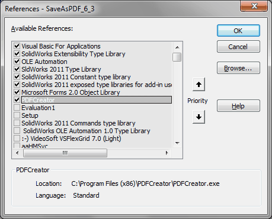

Макрос SaveAsPDF |
Top Previous Next |
|
Предназначен для сохранения чертежа в формат PDF или TIFF, при котором автоматически выполняются следующие операции: 1.Файлу PDF или TIFF присваивается имя в соответствии с правилом проверки имен файлов (отключаемая опция*, при отключении имя файла чертежа = имя файла модели). 2.Проверяется правильность имени файла чертежа (отключаемая опция*) 3.Заполняются свойства чертежа: Автор Заголовок Description Number 4.Контролируется свойство Формат модели (отключаемая опция*); 5.Контролируется версия основной надписи чертежа (отключаемая опция*). 6.Контролируется заимсвование. 7.Проставляется текущая дата напротив поля Разраб. или напротив поля Изм. если чертеж имеет изменения. 8.При сохранении измененного чертежа старый вариант копируется в папку Revisions (имя настраивается). * Опции отключаются в меню Общие настройки (см. пункт Установка и настройка). При работе макроса появляется окно, показывающее, что происходит процесс сохранения. Макрос может быть запущен тремя методами (выведен на три кнопки): ·SaveAsPDF_main - основной режим работы. При сохранении чертежа в основной надписи обновляется дата. ·SaveAsPDF _main_wd - режим аналогичен первому с одним исключением - дата не обновляются. ·SaveAsPDF _main_fd - специальный режим архивного сохранения. В имени PDF или TIFF используется не имя файла чертежа, а обозначение. Сохраненные файлы могут помещаться в специальную папку с именем Archive (параметры сохранения настраиваются). Макрос имеет файл настроек SaveAsPDF\SaveAsPDF.ini, который позволяет задавать разные режимы работы макроса, в том числе создание pdf или tiff через виртуальный принтер PDFCreator. Программу PDFCreator версии 1.2.1 или новее необходимо скачать и установить заранее, до использования макроса. Опыт использования программы PDFCreator показал, что иногда процесс сохранения "подвисает". В этом случае, чтобы разблокировать SW, необходимо выгрузить процесс PDFCreator из памяти.
Библиотеки:  |